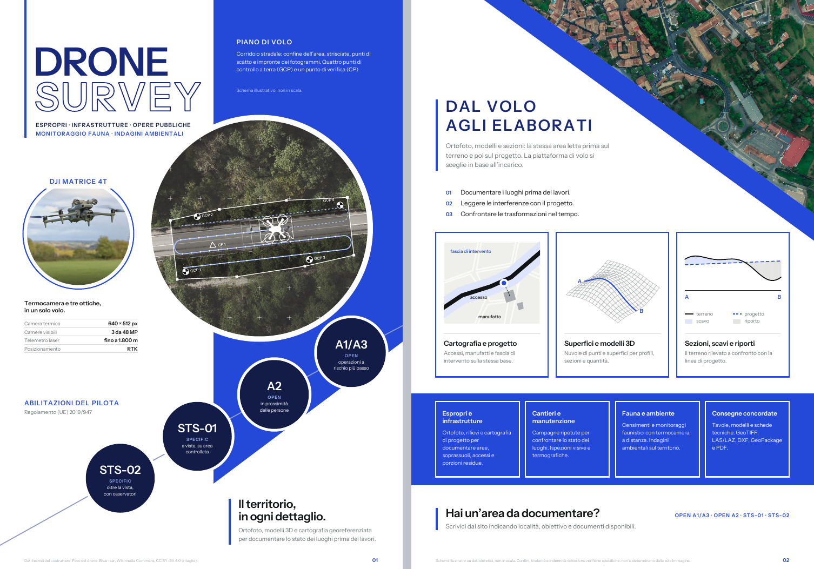

Drone Survey · Bergamo
Rilievi con drone. Dal volo agli elaborati.
Ortofoto, modelli e sezioni per documentare lo stato dei luoghi, leggere le interferenze con un progetto e confrontare le trasformazioni nel tempo.

Dove serve
Fotogrammetria e termografia per espropri, infrastrutture, opere pubbliche, cantieri, fauna e ambiente. La piattaforma di volo si sceglie in base all’incarico.
Espropri e infrastrutture
Ortofoto, rilievi e cartografia di progetto per documentare aree, soprassuoli, accessi e porzioni residue.
Cantieri e manutenzione
Campagne ripetute per confrontare lo stato dei luoghi. Ispezioni visive e termografiche.
Fauna e ambiente
Censimenti e monitoraggi faunistici con termocamera, a distanza. Indagini ambientali sul territorio.
Dal volo agli elaborati
- 01
Definire l’incarico
Si parte dalla località, dall’area da documentare, dall’obiettivo del rilievo e dai documenti disponibili. Si concordano gli elaborati prima dell’acquisizione.
- 02
Pianificare e rilevare
Il piano di volo definisce confine dell’area, strisciate, punti di scatto e impronte dei fotogrammi. Punti di controllo a terra (GCP) e punti di verifica (CP) supportano il controllo del rilievo.
- 03
Elaborare e consegnare
La stessa area viene letta prima sul terreno e poi sul progetto. Ortofoto, nuvole di punti, modelli e sezioni vengono organizzati nelle consegne concordate.
Consegne concordate
Cartografia e progetto
Accessi, manufatti e fascia di intervento sulla stessa base georeferenziata.
Superfici e modelli 3D
Nuvole di punti e superfici per profili, sezioni e quantità.
Sezioni, scavi e riporti
Il terreno rilevato a confronto con la linea di progetto.
Tavole, modelli e schede tecniche. Formati di consegna concordabili: GeoTIFF, LAS/LAZ, DXF, GeoPackage e PDF.
Abilitazioni del pilota
Open A1/A3 · Open A2 · Specific STS-01 · Specific STS-02.

Hai un’area da documentare?
Scrivimi indicando località, obiettivo e documenti disponibili.
n.valigi@gmail.com